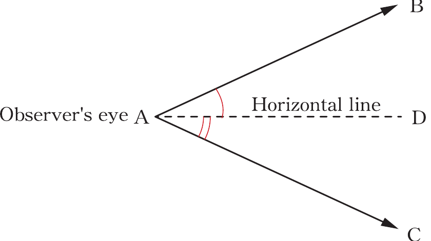

The angles of elevation and depression
When observing an object, you can either observe it horizontally if the object and line of sight are at the same level. Observing it downward if the observer is above the object and observing it upwards if the observer is below the observed object. To experience these scenarios, engage in Activity 8.5.
Activity 8.5: Studying different angles formed when observing objects
1. At your place, choose an object to observe which is at the same level as your eyes. For instance, a person whose height is the same as yours and you look at his eyes.
2. In the second scenario, observe an object which you need to look downward. For instance, looking at a coin on the floor while standing.
3. In the third scenario, observe an object which is at a position which you need to look upwards. For instance, looking at the top of the building.
4. Study and reflect on all three cases and discover features such as angles formed, and possibilities of determining distances between the observer and the objects without measurements.
5. Use the internet or other relevant sources to study and justify your observations and share your findings through visual diagrams.
In Activity 8.5, it can be deduced that observing an object below or above the horizontal level, the line of sight forms an angle below or above. An angle formed between a horizontal level and a line of sight by observing an object downward is called an angle of depression. The angle formed by observing an object upwards is called an angle of elevation. Figure 8.16 illustrates the angles of depression and elevation.

Figure 8.16: Angles of elevation and depression
In Figure 8.16, if B and C are objects to be observed, CÂD is the angle of depression and BÂD is the angle of elevation. The line AB and AC are lines of sights and the line AD represents the horizontal level.